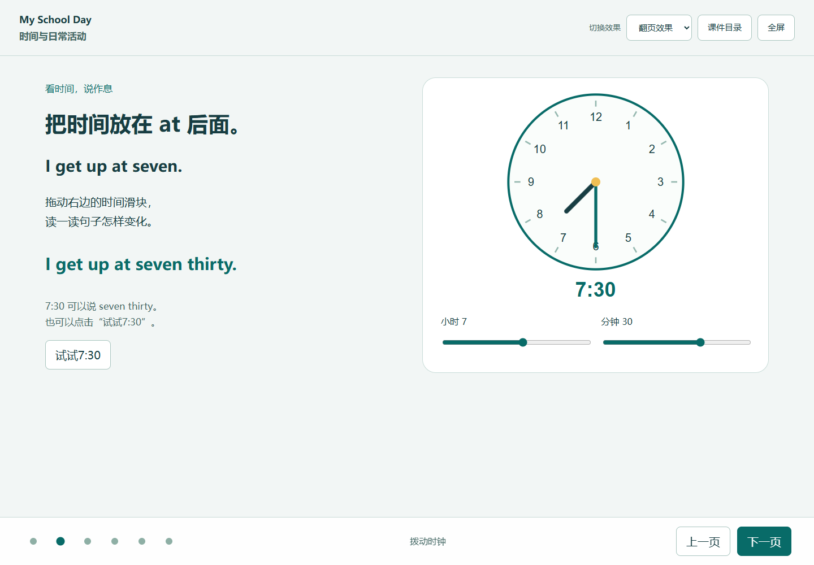

HTML交互式课件
把一个知识点做成可翻页播放、可以操作练习的HTML课件。


复制到WorkBuddy
请调用“HTML交互式课件”技能，为小学五年级英语制作“What time do you…? / I…at…”课件。请先问我希望用翻页讲解、动态演示还是互动闯关，再生成可离线打开的HTML。希望学生能调节时钟看句子变化，并完成拼句与小测。
使用技能：HTML交互式课件
复现方法
- 下载Skill压缩包，在WorkBuddy中上传安装；把知识点材料放进新任务，复制提示词。
- 选择希望的呈现方式，生成HTML后打开试讲，试用翻页、目录和互动。
- 上传生成的HTML，再加一项课堂需要的互动，保存新版本。
使用要点
翻页、目录和全屏入口可用；操作后图形、句子或反馈同步改变；小测可重做，重复点击不会重复计分；投影文字清楚，小屏也能操作。
扩展提示词
请在这份HTML课件上增加一个“我的周末”情境，让学生选择活动、调整时间，并生成完整英语句子，保留原来的翻页、目录和练习。
适用与扩展
初中英语：主语与动词形式变化、语境选择；数学：滑块改变参数并观察图像；科学：控制变量；语文：意象展示与事件排序。